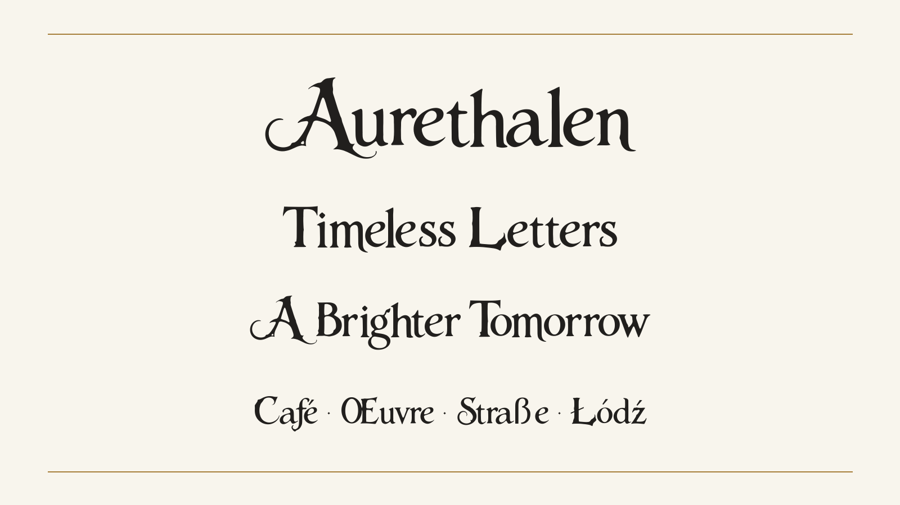
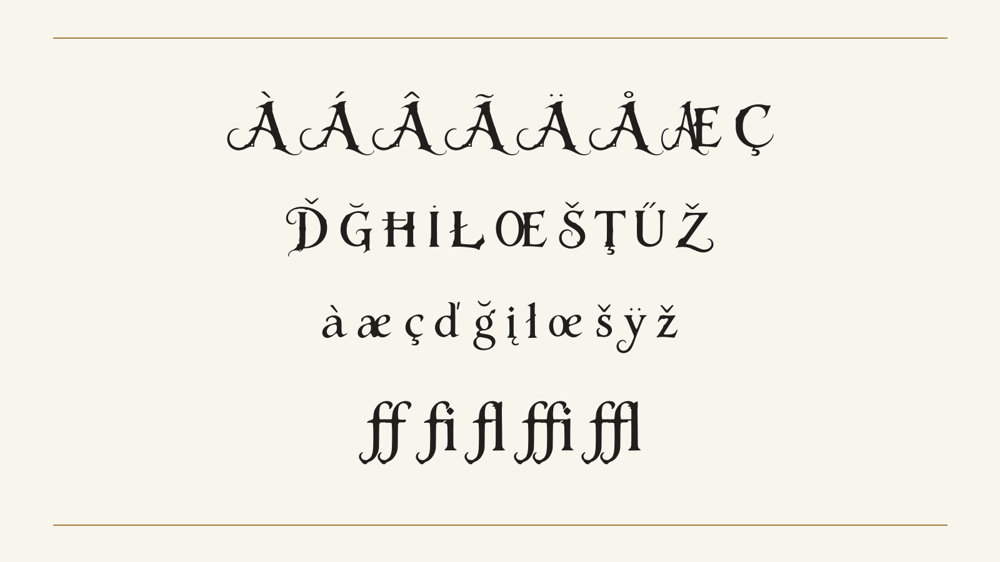
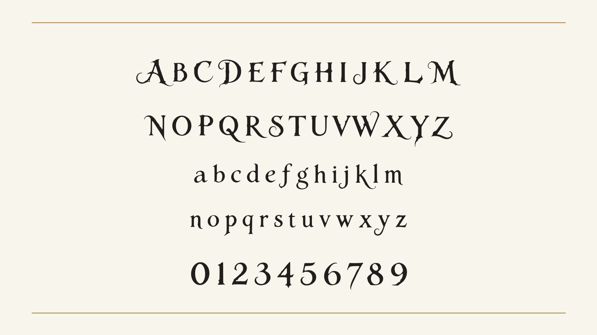

Aurethalen is an ornamental Latin display typeface built around strong stroke contrast, pointed serifs and sweeping flourishes. Its single Regular style is intended for expressive headings, titles, invitations and short passages where individual letters can become part of the composition. To contribute, see github.com/The-Gilded-Threshold/aurethalen.

The design began with a supplied lettering image showing capitals, lowercase letters and numerals. Those forms established its proportions, contrast and ornamental movement. The font development extended that visual vocabulary into punctuation, accented letters and symbols while preserving the original alphabet's characteristic silhouettes. Curved terminals and long swashes give the capitals a particularly expansive rhythm. The lowercase brings that movement into words through pointed details, contrasting curves and occasional descending flourishes.
The character repertoire covers all 319 codepoints required by Google Fonts Latin Core. It includes accented capitals and lowercase, connected and stroked letter forms, spacing accents and combining marks. The combining marks use attachment anchors, with a separate treatment for capital accents and support for stacked marks. Dotless forms of i and j help keep above accents clear. Latin Core coverage describes the selected character target; it does not claim support for every Latin-script orthography or every optional character used by a language.

Standard ligatures are available for ff, fi, fl, ffi and ffl. They bring neighboring f forms together through shared crossbars while retaining the typeface's curved descenders and contrasting stems. Applications with OpenType support can apply these substitutions to ordinary typed letters. Kerning, mark positioning and tabular figures are included alongside superscript, subscript and fraction features. The additional symbols include currency signs, daggers, per mille, arrows and a check mark.
The proportional figures follow the original numeral designs. An alternate set of tabular figures provides equal advances for numeric columns without replacing those shapes with a different visual style. Punctuation follows the contrast and pointed details of the letters, supporting both practical text settings and more decorative compositions.

As a display design, Aurethalen benefits from room around its flourishes. Kerning and standard ligatures should be enabled where supported, and titles should be reviewed at their intended size. Its tall vertical spacing accommodates accents and ornamental strokes; tightly forced line spacing can reduce that clearance. The design is best assessed in short, deliberate settings rather than dense body text.
Aurethalen is licensed under the SIL Open Font License, Version 1.1. The editable UFO sources and build instructions are prepared for open collaboration. Development used AI assistance for tracing, font engineering and technical documentation; formal Google Fonts contributor declarations remain pending; the independent OFL release is already public.